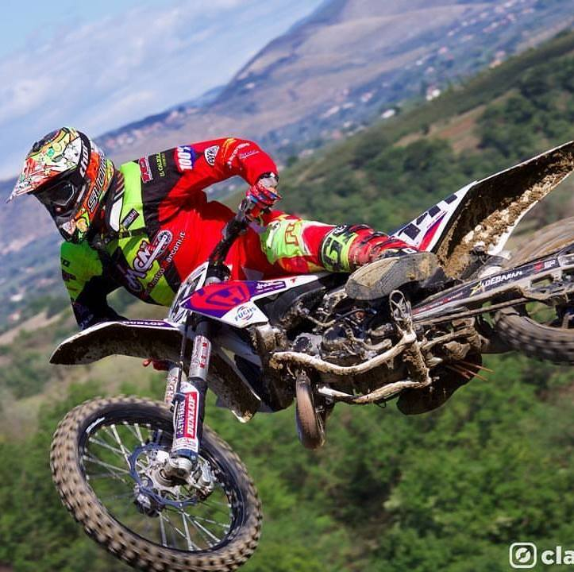
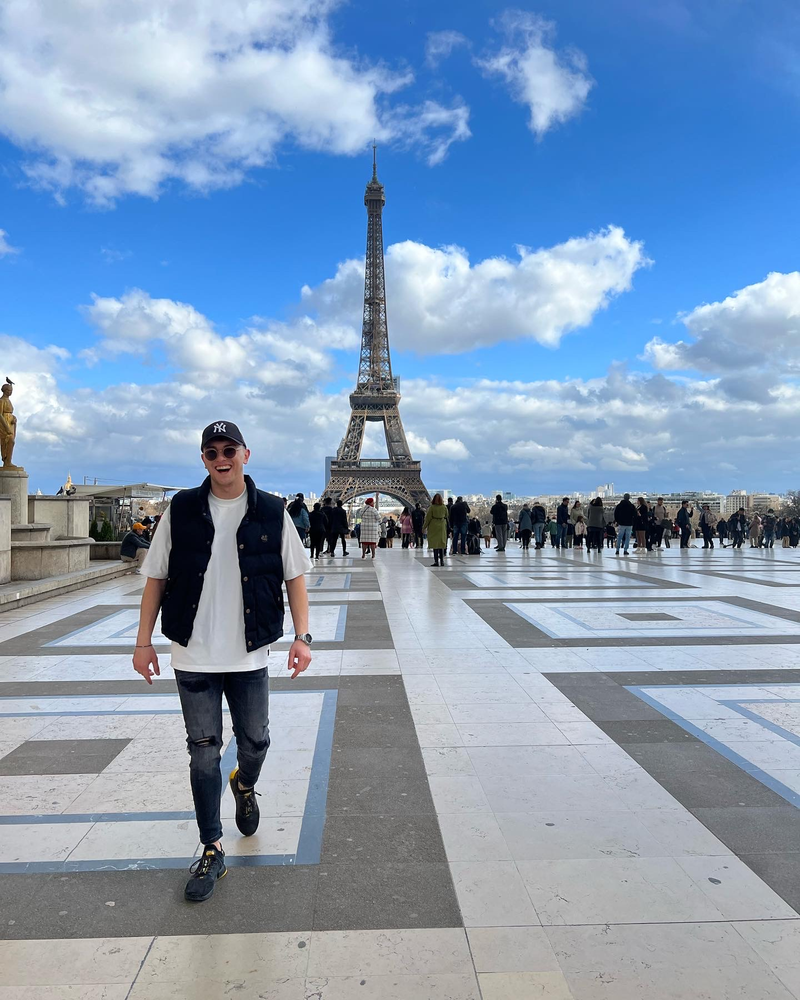

Sono sempre stato un ragazzo sportivo . Fin da bambino ho praticato degli sport fra cui il nuoto e il basket ma quando con mio padre iniziai a fare motocross, capii che quello era lo sport per me . Da una semplice attività sportiva ,diventò per me una vera e propria passione. Salire su quella motocicletta mi faceva sentire bene , era il mio sfogo . Vinsi molti gare e competizioni sportive, ero fiero di me .
Poi però dovetti lasciare perché il mio lavoro mi occupava tanto tempo e non riuscivo ad incastrare tutte le cose , ma sicuramente quel periodo di divertimento e di grande impegno rimane nel mio cuore.

Tra le mie passioni rientra sicuramente il viaggiare , cosa che da due anni a questa parte ho apprezzato sempre di più.
Ho visitato diversi posti e ho già in programma nuove mete. Adoro sentire l'adrenalina che sale ogni volta che prendo un aereo per iniziare un’avventura e scoprire culture e luoghi differenti .
Ogni viaggio ti lascia qualcosa dentro .

I motori fanno parte della mia vita . Essendo meccanico vivo a stretto contatto con le moto , ma sicuramente le macchine sono forse una passione ancora più grande . All eta di 20 anni , dopo aver fantasticato a lungo su quale macchina comprare., decisi di prendere una Fiat 500 abarth . Tanto la desideravo che una volta ottenuta era diventata ormai un pensiero fisso . Girare in macchina , fare lunghe passeggiate mi fa entrare in un mondo tutto mio ,mi trasmette gioia e serenità .